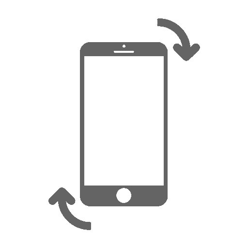

Sentimos muito, mas o aplicativo não é compativel com Internet Explorer, por favor, utilize um browser moderno para acessar este conteúdo (Chrome, Firefox, Microsoft Edge 76+, Opera).
Atenção!

Vire o dispositivo para iniciar.
Aplicativos móveis desenvolvidos em webGl são compatíveis com os navegadores chrome e firefox. Clique em ok para continuar.